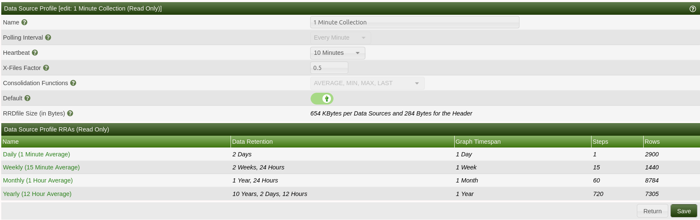
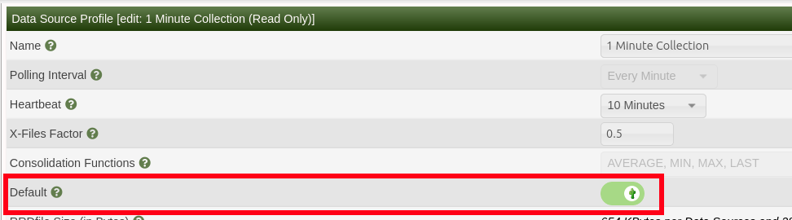
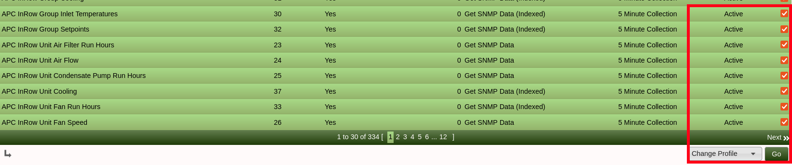

This howto describes all necessary steps for convert your cacti to 1 minute poller interval. This cause one gap in graphs during the convert. Gap size depends on count of your rrd files.
Configuration->Settings-> Data -> Structured RRDfile Paths). With structured path you will have more works with splice rrd files. You need change splice script.*/5 * * * * cacti /usr/local/bin/php /usr/local/share/cacti/poller.php 2>&1
Before this operation, backup Cacti database and all data in rra folder
You can run rrdcleaner and delete unused RRD files. It can decrease converting time. System Utilities
Disable your poller in Crontab or via GUI Console -> Configuration -> Settings -> Poller tab -> Data Collection Enabled
mkdir -p /tmp/cacti/rrd_old
mkdir -p /tmp/cacti/rrd_new
mkdir -p /tmp/cacti/rrd_fin
Make sure that you have enought space on temporary disk. You need more than twice of rra directory size.
mv /usr/local/share/cacti/rra/* /tmp/cacti/rrd_old/
Go to Console -> Presets -> Data Profiles. Here should be at least 5 Minute Collection profile (because you are using it until now) and 1 Minute Collection profile. If the second is missing, create it. 
Remember Data profile ID - Edit your 1 minute collection again and in URL will be .../data_source_profiles.php?action=edit&id=3
Console -> Configuration -> Settings -> Poller tab
Run these SQL queries:
UPDATE data_template_data SET rrd_step=60 WHERE rrd_step=300;
UPDATE data_template_rrd SET rrd_heartbeat=600;
Here replace X with ID from Step "Check or create Presets -> Data profiles":
UPDATE data_template_data SET data_source_profile_id=X;
Console -> Utilities -> System utilities -> Rebuild Poller Cache
Console -> Presets -> Data Profiles
Edit profile 1 min Collection, checkbox default.

Console -> Templates -> Data Source
Select all -> Change Profile

New rrd files with correct 1 min profile will be created in /usr/local/share/cacti/rra directory. Cacti log shouldn't contain errors.
mv /usr/local/share/cacti/rra/* /tmp/cacti/rrd_new/
You need run splice command for each rrd file. This could be time consuming, depends on number of files. You can use some tool for parallel tasks. The splice_rrd.php file is designed to allow two RRDfiles to be merged. This utility can effectively change the resolution/step of an RRDfile so long as the new RRDfile already has the correct step.
Basic script:
#!/bin/sh
cd /tmp/cacti/rrd_old/
for f in *.rrd
do
echo $f
/usr/local/bin/php /usr/local/share/cacti/cli/splice_rrd.php --oldrrd=/tmp/cacti/rrd_old/$f --newrrd=/tmp/cacti/rrd_new/$f --finrrd=/tmp/cacti/rrd_fin/$f
done
Run script and wait. My experience - 5200 files took 100 minutes without paralelisation. Script will be output sometning like:
fortigate_1_-_fg200e4q17911506_traffic_in_7317.rrd
NOTE: Using Native Arrays due to lack of SQLite.
NOTE: Using RRDtool Version 1.8.0
NOTE: RRDfile will be written to '/tmp/cacti/rrd_fin/fortigate_1_-_fg200e4q17911506_traffic_in_7317.rrd'
NOTE: Re-Importing '/tmp/fortigate_1_-_fg200e4q17911506_traffic_in_7317.dump.27482713' to '/tmp/cacti/rrd_fin/fortigate_1_-_fg200e4q17911506_traffic_in_7317.rrd'
NOTE: Time:0.88, RUsage:18 MB
mv /tmp/cacti/rrd_fin/* /usr/local/share/cacti/rra/
File owner should be cacti
chown cacti /usr/local/share/cacti/rra/*
Change your cron settings from 5 minutes to 1 minute and enable (uncomment). Old row:
#*/5 * * * * cacti /usr/local/bin/php /usr/local/share/cacti/poller.php 2>&1
New row
* * * * * cacti /usr/local/bin/php /usr/local/share/cacti/poller.php 2>&1